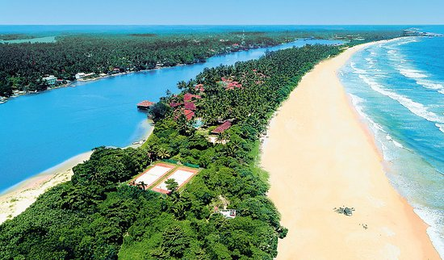
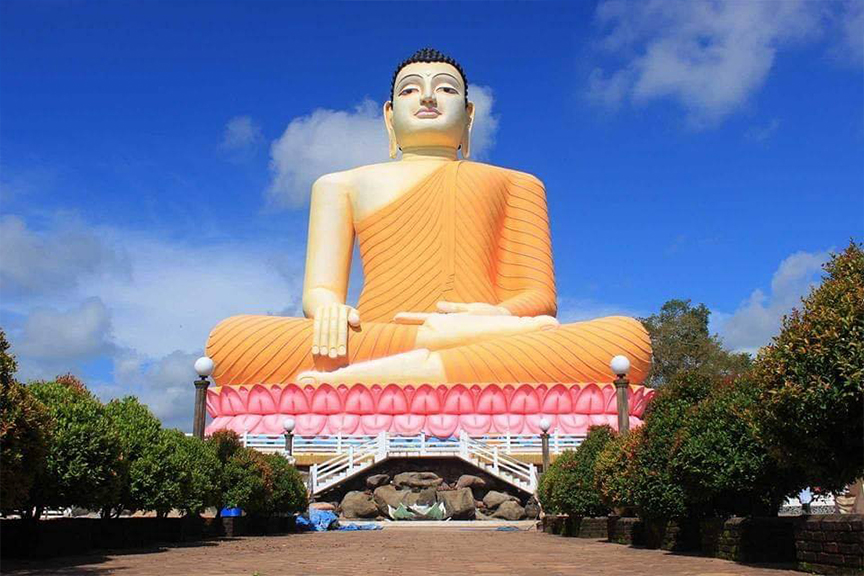
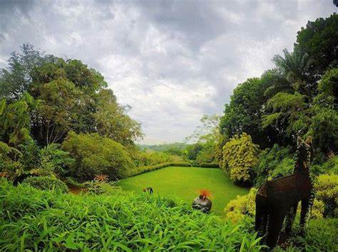
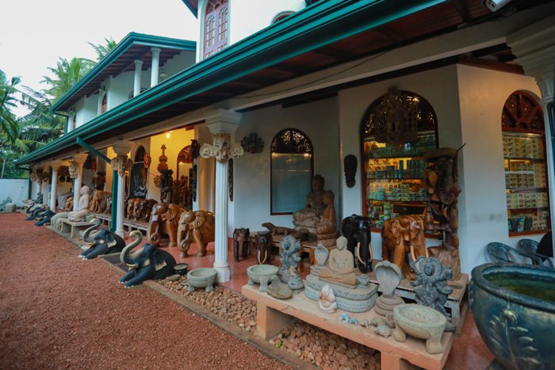

The Bentota Turtle Hatchery Project is a popular attraction in Bentota for all travelers. The pristine golden shores that draw you to our island, also provides an enticing nesting ground for several endangered turtle species from the Olive Ridley to the Leatherback turtle. The project aims at conserving and protecting the eggs from predators and other dangers. Visit the turtle hatchery in Bentota to learn about these endangered graceful creatures of the sea.
Ventura Beach |
Kande Viharaya Temple - කන්දේ විහාරය |
|---|---|
Brief Garden, by Bevis Bawa |
Sunflower Arts & Crafts |